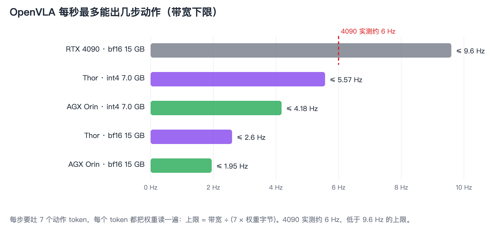

第 3 章 · 先算下限：读权重要多久、算一遍要多久、放不放得下
本地运行
git clone https://github.com/wikieden/robot-edge-inference
cd robot-edge-inference/code/notebooks
pip install jupyterlab torch numpy
jupyter lab ch03_lower_bounds.ipynb也可以下载后直接用 VS Code 打开 .ipynb 运行。需要 GPU 的章节在 Colab 里选「代码执行程序 → 更改运行时类型 → GPU」。
本章回答：一个 VLA 放到某块板子上，最快能跑到多少 Hz？还没买板子、没跑代码之前，能不能先用几个数估出来？
编写日期：2026-11-26 · 上一章：第 2 章 端侧芯片 · 下一章：第 4 章 量化
对应原文：vla-deep-dive/materials/text/papers/openvla-2406.09246.txtL200、L248–L250（7 维动作、每维 256 个 bin）、L336–L338（bf16 占 15 GB、RTX 4090 约 6 Hz）、Table 2 L607–L609（int4 7.0 GB）；pi0-2410.24164.txtL302–L306（3.3B）、Table I L942–L951；paligemma-2407.07726.txtL231–L233（224 px → 256 个图像 token）；RTX 4090 带宽 1,008 GB/s 见《深入理解 AI Infra》§4.3 L469
本章缩写：bf16 = Brain Floating Point 16（谷歌大脑提出的 16 位浮点，每个数 2 字节）· int4 = 4-bit integer（4 位整数）· GB/s = gigabytes per second（每秒吉字节）· token = 模型处理的基本单位（文字片段、图像小块或离散化的动作）· prefill = 预填充（把输入一次算完）· decode = 解码（一个一个往外吐 token）· 其余见附录 · 缩写与术语表
讲解
第一步：两个下限：搬砖和砌墙（2026-11-26）
类比：盖墙。 砖堆在院子里，工人要先把砖搬到墙边（读数据），再一块块砌上去（计算）。墙最快多久盖好，取决于两件事里更慢的那件：搬砖的小车每秒能运多少，砌墙的工人每秒能砌多少。
对应到模型，有两个下限：
- \(t_{\text{读}}\)：读作"t 读"，把这次要用的数据从内存读出来至少要多久。
- \(t_{\text{算}}\)：把这次要做的乘加做完至少要多久。
- 实际时间不会比两者中较大的那个更快，通常还要慢好几倍（第 5 章讲为什么）。
这就是《深入理解 AI Infra》第 1 章和 §4.8 用的方法（AII §1.3），机器人上一样适用。
一句话：最快多快，看搬数据和做计算哪个更慢。
第二步：OpenVLA：一步要把权重读 7 遍（2026-11-26）
OpenVLA 是 7B 参数的 VLA。它输出 7 维动作（比如末端 3 个位置、3 个姿态、1 个夹爪），每一维离散成 256 个格子（bin），当成 1 个 token 输出（L200、L248–L250）。所以每一步动作要逐个吐出 7 个 token。
batch = 1 时，每吐一个 token 都要把全部权重从内存读一遍（第 1 章第三步）。bf16 推理占 15 GB（L336）。
算一遍，再和论文实测对照：
| 设备 | 带宽 | 一步下限 | 最多多少 Hz |
|---|---|---|---|
| RTX 4090 | 1008 GB/s | \(7 \times 15 \div 1008 = 104.2\) ms | 9.6 Hz |
| Jetson T5000（Thor） | 273 GB/s | 384.6 ms | 2.60 Hz |
| AGX Orin 64GB | 204.8 GB/s | 512.7 ms | 1.95 Hz |
论文实测 RTX 4090 上约 6 Hz（L337–L338），比 9.6 Hz 的上限慢，但在同一个量级。这说明下限算得没错，实际还有别的开销（图像编码、kernel 启动等）。
同一个模型搬到 AGX Orin 上，上限只剩 1.95 Hz。换成 int4（占 7.0 GB，L609）：AGX Orin \(7 \times 7.0 \div 204.8 = 239.3\) ms → 最多 4.18 Hz；Thor 179.5 ms → 5.57 Hz。

注意：15 GB 是论文报告的推理显存，比 \(7\text{B} \times 2\) 字节 \(= 14\) GB 多一点，多出来的是视觉编码器、激活和缓冲。这里用 15 GB 是偏保守的估计。
一句话：自回归一步吐 7 个 token，每个都读一遍权重；带宽 ÷ (7 × 权重字节) 就是最高频率。
第三步：π0 的前缀：这次卡住的是算力（2026-11-26）
不是所有部分都被带宽卡住。π0 每次推理先把前缀（3 张图 + 一段文字指令）一次算完，这叫 prefill。前缀里 token 很多，同一份权重被很多 token 共用，读一遍权重就能做很多计算，这时卡住的是算力。
运算量：每个 token 过一遍有 \(N\) 个参数的模型，大约做 \(2N\) 次运算（每个参数一次乘、一次加）。\(T\) 个 token 就是：
- \(N\)：参数量。π0 的视觉语言部分是 3B（L302–L304），即 \(3 \times 10^9\)。
- \(T\)：前缀 token 数。PaliGemma 一张 224 px 的图是 256 个 token（PaliGemma 论文 L231–L233），3 张图 768 个；再加 48 个文字 token（48 是编的），共 816 个。
算一遍：\(2 \times 3 \times 10^9 \times 816 = 4.90 \times 10^{12}\)，约 4.9 万亿次运算。
和实测对照：4090 上前缀用了 \(14 + 32 = 46\) ms（Table I），反推有效算力 \(4.9 \times 10^{12} \div 0.046 \approx 106\) 万亿次 / 秒。而读一遍 6 GB 权重只要 \(6 \div 1008 = 6.0\) ms，远小于 46 ms，所以前缀被算力卡住，不是带宽。
搬到 AGX Orin：稠密 138 INT8 TOPS × 利用率 40%（编的）= 55，前缀约 \(4.9 \times 10^{12} \div (55 \times 10^{12}) \approx 89\) ms。
| 阶段 | 特点 | 卡在哪 |
|---|---|---|
| 前缀（prefill） | 几百个 token 一起算，权重被反复用 | 算力 |
| 逐个吐 token（decode）、flow 动作步 | 每步 token 很少，读一遍权重只做一点计算 | 带宽 |
一句话：前缀 token 多、算力卡；逐步生成 token 少、带宽卡；一个模型里两种都有，要分开算。
第四步：放不放得下（2026-11-26）
速度之前先看容量：模型连同缓冲要能放进统一内存扣掉预留后的部分（第 2 章第一步）。
例子（系统预留 3 GB 是编的）：
| 设备 | 留给模型 | OpenVLA bf16（15 GB） | OpenVLA int4（7.0 GB） |
|---|---|---|---|
| Orin Nano 8GB | 5 GB | 放不下 | 放不下 |
| Orin NX 16GB | 13 GB | 放不下 | 放得下 |
| AGX Orin 64GB | 61 GB | 放得下 | 放得下 |
Orin Nano 连 int4 的 OpenVLA 都放不下，要么换更小的模型（比如 0.45B 的 SmolVLA，第 8 章附录），要么换板子。
一句话：先算放不放得下，再算多快；放不下的话，算得再快也没用。
动画演示：一步读 7 遍权重
可交互版：animations/03-lower-bounds.html（滑块：内存带宽）
怎么看：
- 7 个格子依次亮起，每亮一个代表把 15 GB 权重读一遍（第二步）；
- 4090 上下限 104 ms、9.6 Hz，红虚线是实测约 6 Hz（第二步）；
- 换到 AGX Orin 只剩 1.95 Hz，int4 是 4.18 Hz（第二步）；
- 拖滑块改带宽，看 bf16 和 int4 的上限一起变。
练习与作答记录
题 1（第二步）：OpenVLA int4（7.0 GB）放到 Orin NX 16GB（102.4 GB/s）上，一步的带宽下限是多少 ms？最多多少 Hz？
作答：（待作答）
题 2（第三步）：如果 π0 只用 2 路相机（2 × 256 个图像 token + 48 个文字 token），前缀运算量是多少？在 AGX Orin 上按 55 万亿次 / 秒算，大约多少 ms？
作答：（待作答）
题 3（第三、四步）：一个模型在某块板子上"放得下"，但 prefill 下限已经超过时限了。只换一块带宽更大、算力不变的板子，能解决吗？为什么？
作答：（待作答）
口诀
搬砖砌墙看更慢，读算两限取其大；
一步七个 token，权重读七遍；
前缀 token 多算力卡，逐个生成带宽卡；
先问放不放得下，再问跑得有多快。
本章复习卡片
E05（两个下限公式）、E06（prefill 和 decode 各卡在哪）
附录 · 延伸阅读
留给以后深入学习用，不影响本章主线。★ 是建议先读的。
推荐阅读
| 读什么 | 读哪里 | 读它为了什么 |
|---|---|---|
| ★ 《深入理解 AI Infra》第 1 章 | ai-infra/materials/ai-infra-book/manuscripts/01-初识 AI Infra.md §1.3 L233–L365 |
单 token 的读与算各要多久、实测为什么达不到 |
| ★ 《深入理解 AI Infra》§12.1.5 | ai-infra/materials/ai-infra-book/manuscripts/12-端边云协同.md L154 起 |
同样方法用在手机上：84.8 GB/s → Qwen3-8B 约 5 token/s |
| OpenVLA 论文 | vla-deep-dive/materials/text/papers/openvla-2406.09246.txt L336–L338、Fig. 6 L612–L620 |
各种 GPU 上的实测频率 |
| VLA 讲义 · 动作 token | vla-deep-dive 第 6 章 | 动作为什么能离散成 token |
| 《深入理解 AI Infra》§4.8 | ai-infra/materials/ai-infra-book/manuscripts/04-加速器架构.md L960 起 |
用同一个模型比较 11 款候选设备 |
数学原理
- 矩阵乘的运算量：一个 \(N\) 参数的层处理 1 个 token，每个参数做一次乘法和一次加法，约 \(2N\) 次运算；\(T\) 个 token 就是 \(2NT\)。
- 算术强度：运算量 ÷ 读的字节数。前缀 token 多，强度高，算力先满；逐个生成 token 少，强度低，带宽先满。这是 roofline 模型（AISPE §6.13）的核心。
公式清单
| 公式 | 意思 |
|---|---|
| \(t_{\text{读}}\) = 字节 \(\div\) 带宽 | 带宽下限 |
| \(t_{\text{算}}\) = 运算量 \(\div\) 算力 | 算力下限 |
| \(t_{\text{一步}} \ge 7 \times\) 权重字节 \(\div\) 带宽 | OpenVLA 一步的带宽下限 |
| 运算量 \(\approx 2NT\) | \(N\) 个参数、\(T\) 个 token 的前向运算量 |
| 模型占用 \(\le\) 总内存 \(-\) 预留 | 放不放得下 |
代码对照：把本章的数字用代码算一遍
纯 Python，不需要安装任何库。代码在仓库本地
ai-infra-edge/solutions/chapter-code/ch03_lower_bounds.py，配套测试tests/test_chapters.py::test_ch03，notebook 在notebooks/ch03_lower_bounds.ipynb。Mac 上直接能跑，不需要 GPU：
bash cd ai-infra-edge/solutions/chapter-code uv run python ch03_lower_bounds.py # 一步一步打印 uv run pytest tests/test_chapters.py -k ch03
讲义 ↔ 代码（OpenVLA、π0 的数来自论文；48 个文字 token、利用率 40%、预留 3 GB 是编的）：
| 讲义 | 公式 | 写法 | 跑出来 |
|---|---|---|---|
| 第二步 4090 一步下限 | \(7 \times 15 \div 1008\) | openvla_step_ms(15, 1008) |
104.2 ms → 9.6 Hz |
| 第二步 AGX Orin bf16 | \(7 \times 15 \div 204.8\) | openvla_step_ms(15, 204.8) |
512.7 ms → 1.95 Hz |
| 第二步 AGX Orin int4 | \(7 \times 7.0 \div 204.8\) | openvla_step_ms(7.0, 204.8) |
239.3 ms → 4.18 Hz |
| 第三步 前缀运算量 | \(2 \times 3\text{e}9 \times 816\) | prefill_flops(3e9, 816) |
4.90 万亿次 |
| 第三步 反推 4090 有效算力 | 运算量 ÷ 46 ms | flops / 0.046 |
106 万亿次 / 秒 |
| 第三步 AGX Orin 前缀 | 运算量 ÷ 55 万亿 | compute_ms(flops, 55.2) |
89 ms |
| 第四步 放不放得下 | 占用 ≤ 总 − 3 | fits(7.0, 16) |
放得下 |
关键几行：
def read_ms(gb, bw_gbps):
return gb / bw_gbps * 1000 # 字节 ÷ 带宽，换成毫秒
def openvla_step_ms(model_gb, bw_gbps, n_tokens=7):
return n_tokens * read_ms(model_gb, bw_gbps) # 每吐一个 token 读一遍全部权重
def prefill_flops(params, tokens):
return 2 * params * tokens # 每个参数一乘一加，每个 token 一遍
代码里才看得到的 2 件事：
compute_ms的算力参数单位是"万亿次 / 秒"，函数里乘了 \(10^{12}\)；传 55 和传 55e12 结果差一万亿倍，单位最容易错。- 带宽用的是 GB/s（\(10^9\) 字节），模型大小也要用同一个 GB；如果模型大小写的是 GiB（\(2^{30}\)），要先换算，差约 7%。
自己改一改（不影响练习答案）：
- 把
BW里加一行 RTX 5090，查它的带宽填进去，看 OpenVLA 上限变多少。 - 把前缀 token 数改成 4 张图，看 AGX Orin 上前缀变成多少 ms。